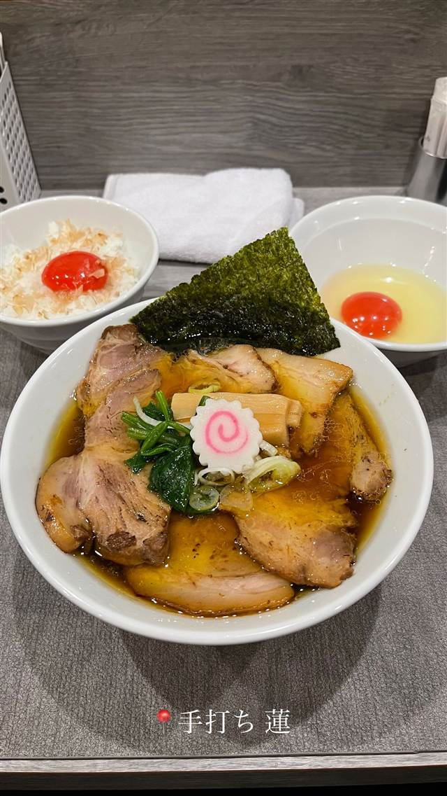

町中華 · 町中華 · 両国
中華や
30年以上続く、カニとうずら卵の具だくさん五目チャーハン
中華や
森下・千歳で30年以上営業する町中華。カニやうずら卵を使った具だくさんの五目チャーハンが名物で、地元で長く愛されている。
REVIEWS
世間の評判
3.48食べログ
五目炒飯の味付けと具だくさん
- 五目炒飯はパラパラとした食感で具だくさんだったという声がある
- 味付けは濃いめでご飯がしっかりと進む味だったという声がある
食べログ 口コミ1件
| 創業 | 30年以上前から営業（開業年不詳） |
|---|---|
| 看板 | 五目チャーハン、チャーシューラーメン |
| こだわり | カニ・うずら卵・グリーンピース・チャーシューなどを使った五目チャーハン |
| どこから | 都心 |
| 営業時間 | 月〜土 11:00-14:00、17:00-21:00 日 休み |
| 予算 | 昼 ～¥999 夜 ～¥999 |
| 定休日 | 日曜・祝日 |
| 場所 | 森下 東京都墨田区千歳2-1-13 |
| メモ | 昼夜問わず混雑し満席になることが多い |
食べたもの：チャーシューラーメン / 炒飯とビール